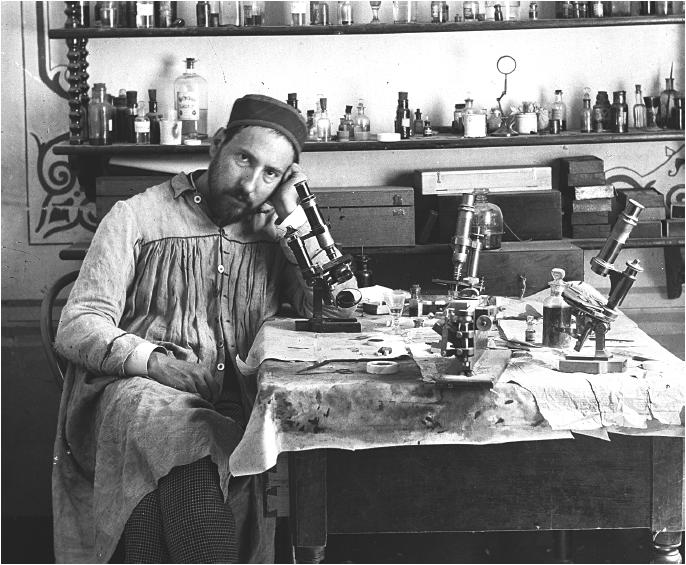
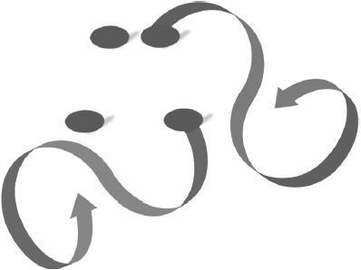

第13章 塑造你的大脑
改变思维，改变人生
这一次，11岁的圣地亚哥·拉蒙-卡哈尔（Santiago Ramóny Cajal）又犯了错，他造的小火炮把邻居崭新的大木门炸开了花。在19世纪60年代的西班牙乡下，惩罚胡作非为的不良少年没有什么特别措施。就这样，小卡哈尔发现自己被锁进了满是跳蚤的牢房。
卡哈尔固执而又叛逆。他只对艺术情有独钟。可是光是涂涂画画能有什么用呢？自从他对其他科目放任自流，特别是对数学和科学更是不闻不问，这之后他看起来更是没救了。
卡哈尔的父亲唐·胡斯托（Don Justo）是个白手起家、不苟言笑的男人。他们家和权贵显要根本沾不上边。由于迫切想让儿子学会自我约束，变得稳重点，唐·胡斯托让他拜一位理发师学艺。情况更加糟糕，卡哈尔对学习的态度更是放任自流。为了让他迷途知返，老师揍过他，也饿过他，到头来都没用。卡哈尔是老师的噩梦，又可笑又荒唐，从没守过规矩。

卡哈尔获得了诺贝尔奖。世人对神经系统结构与功能的理解离不开他在这一领域做出的许多重要贡献。[1]在这张图上，卡哈尔看起来更像一位艺术家而不是科学家。他的眼中依然流露着年少时的调皮，不知这调皮曾让他惹过多少麻烦。
卡哈尔一生曾和许多杰出的科学家相识共事，这些科学家远比他聪明多了。然而他在自传中曾坦白指出：尽管杰出的人能够取得非凡的成就，但是他们也会像所有人一样粗心大意，也会有所偏颇。卡哈尔认为他成功的关键在于毅力（“资质平平之辈的优秀品质”[2]）、灵活的应变能力以及谦虚认错的态度。然而这一切的背后，是亲爱的妻子多娜·加西亚（Dona Silvería Fananás García）对他的支持（这对夫妇生了7个孩子）。卡哈尔认为，任何人甚至普通智力的人都能够塑造自己的大脑。这样即使是最没天赋的人也会有丰厚的收获。[3]
谁能想到卡哈尔有一天不仅获得了诺贝尔奖，最终还成了现代神经学之父呢？
改变思维，改变生活
卡哈尔已经20出头，不良少年的他转而开始投入医学的传统研究。他自己也奇怪，是不是脑袋“厌倦了轻率和另类的举止，想要安定下来了呢”？[4]
髓鞘是一种脂质“绝缘组织”，它能让信号在神经元内快速传送，有证据表明，它们通常到人二十几岁时才停止生长。这就解释了为什么青少年常常难以克制冲动——因为意图区与控制区之间的纽带并未完全形成。[5]
先天的不足，能靠后天的勤勉和专注弥补。可以说，努力可以弥补欠缺的天赋，甚至创造天才。[6]
——圣地亚哥·拉蒙-卡哈尔
然而当你运用神经回路时，会促进回路表面髓鞘的形成——更不用说促成其他许多微观的变化了。[7]练习能够加强大脑不同区域间的联系，为大脑的控制中心与知识存储中心搭建高速公路。以卡哈尔的例子看，似乎在他的自然成长过程中，经过自身对思维的培养，终于得以掌控自身的全部行为。[8]
人们在练习这些思维的过程中，这些思维会使用到某些神经元，这样可能会促进神经环路的成长。[9]我们对神经发育的理解尚未成熟，但是有件事却变得越来越明显——通过改变自身的思考方式，我们也能让大脑内部发生显著变化。
卡哈尔尤其有趣的一点是尽管他不是天才，却取得了许多伟大的成就，至少他不是传统意义上的天才。令卡哈尔深感遗憾的，是他“在措辞上从来不曾迅速、准确、清晰”。[10]更糟糕的是，一旦情绪化起来，他甚至几乎说不出话来。他做不到死记硬背，在学校鹦鹉学舌般地模仿信息虽然会得到表扬，可对于他而言困难而痛苦。卡哈尔能做到的最多只是理解并记住核心概念，他常常对自己不尽人意的理解力感到绝望。[11]然而，在如今神经科学研究中一些最激动人心的领域，几乎都以卡哈尔的最初发现为基础。[12]
卡哈尔后来回忆说，他的老师在能力好坏的认识上，看起来可悲得离谱。在他的老师眼中，反应快被等同于智商高，记得住被等同于能力强，服从即品行端正。[13]除了“一些缺点”，卡哈尔的成功也让我们看到，甚至今天的老师是怎样就轻易地低估了学生，学生又是如何低估他们自己的。
搭建深层组块
卡哈尔在医学院断断续续地完成了学业。他在古巴做过军医，又多次在竞争激烈的教授评选测试中落败，卡哈尔最终取得细胞组织学教授的职位，研究生物细胞的微观解剖。
在研究脑细胞及神经系统的工作中，每日清晨的卡哈尔都会小心翼翼地准备显微镜载玻片。接下来的几个小时里，他开始在上过色的细胞中观察那些表现突出的细胞。下午，他回想心中的抽象画，看看自己对早上的观察内容还能记得多少，然后开始画细胞。每次画完，卡哈尔会将自己画的细胞与显微镜下观察到的进行比较，然后接着回去画，再观察，再回去画，如此周而复始。只有他的画真正捕捉到了经过合成的精髓，卡哈尔才收手，得到这个精髓不是观察一张玻片就够的，而是致力于一整套单一细胞类型的玻片集合才能得到。[14]
卡哈尔是一位摄影大师，他甚至是用西班牙语写彩色摄影方法类书籍的第一人，但他从不认为照片能够捕捉到他眼中的精彩。能做到的只有他的艺术手段，他从思维里抽象出现实，即组块过程，这是帮人们看见组块精髓的最佳办法。
合成内容（synthesis）是一种神经模型，它可以是抽象化内容、组块或主旨概念。高质量组块构成的神经模型，不仅能与我们钻研的学科产生共鸣，也能在其他学科或生活领域产生反响。抽象化能让概念从一个领域转到另一个领域。[15]这就是为什么伟大的艺术、诗歌、音乐以及文学会如此震撼人心。掌握组块后，它会在我们的脑海中获得新生，也就是说，我们会形成一些能增强并启迪已有神经模型的想法，这使我们更好地去看清并发展其他相关模型。
一旦创造的组块构成了神经模型，我们便能轻松地将组块模型传授给他人，就像卡哈尔以及几千年来许多其他伟大的艺术家、诗人、科学家、作家所做的一样。一旦他人掌握了组块，他们不仅能运用，还能驾轻就熟地创造新组块来运用到自己生活中的其他领域，这也是创造过程的一个重要部分。

这里我们能清楚地看到左边的那个组块，即波状起伏的神经丝带，和右边的组块极为相似。这意味着一旦你掌握了某一科目的组块，要理解或创造其他科目中的类似组块也就简单多了。这个道理同样适用于数学，纵观物理、化学、工程学，有时经济学、商学、人类行为模式中也能发现它的影子。所以物理或工程专业学生，会比读英语或历史专业的学生更容易考取工商管理硕士学位。[16]
通过比喻或实体类比也能构造组块，这些组块甚至能使一个领域的概念对另一个领域产生影响。[17]这就是为什么热爱数学、科学、技术的人常意外地发现他们会受益于运动、音乐、语言、艺术或文学等方面的活动或知识。懂得如何学习语言促进了我在数学、科学方面的学习。
快速学习数学和科学的关键，是要意识到每个所学概念几乎都可以与你已有的知识进行类比，这就是做比较。[18]有时比喻或类比并不十分贴切，比如把血管比喻成高速公路，或把核反应类比为倒塌中的多米诺骨牌。但这些简单的类比和比喻能作为强大的工具，帮你利用现有的神经结构，让它如脚手架般让你迅速地构建新的更复杂的神经结构。开始用这个新的神经结构后，你会发现比起最初的简单结构，它不知好用多少。再构建其他领域的新结构时，这些结构又为比喻或类比提供了来源。（确实，这就是物理学家与工程师在金融领域特别吃香的原因。）以伊曼纽尔·德曼（Emanual Derman）来说，他原是在理论粒子物理学领域研究成果颇丰的物理学家，后就职于高盛集团，最终开发出了black-derman-toy（BDT）利率模式。最终德曼担任了此公司定量风险策略组主管。
本章小结
·大脑发育的速度因人而异。许多人的大脑在25岁后才发育成熟。
·在科学界，许多令人敬仰的重量级人物，起初显然是前途渺茫的问题少年。
·在科学、数学、技术领域取得成功的专业人士，逐渐习得的一个特质，就是学会如何组块——提炼关键思想。
·比喻或实体类比也能构造组块，这些组块能使一个截然不同的领域的概念对另一个领域产生影响。
·无论你当前或今后有怎样的职业道路，要有开放心态，保证自己的学习宝库中常备数学和科学知识。你能因此储存更多的组块，从而更精明地应对生活、工作中的各种困难和挑战。
驻足与回顾
合上书，转开视线，想想本章有哪些主要思想？你会发现，如果把这些主要思想联系到你的生活工作中，回想会更容易些。
学习提升
1.在圣地亚哥·拉蒙-卡哈尔的职业生涯中，他找到一种能将自己的艺术热忱与科学痴迷结合起来的方式。你所认识的名人、亲友或熟人身上有过相似的经历吗？你的生活中会有这种结合吗？
2.你怎样才能避免陷入这种思维方式，认为反应快的人更聪明？
3.中规中矩地做事有利有弊。拿卡哈尔的人生与自己做对比。什么时候按别人说的做才真正有益？自己是否曾按别人说的做却无意办了错事？
4.与卡哈尔的缺点相比，你自身的局限是什么？你怎样才能将自己的劣势转变为优势呢？
[1] DeFelipe 2002.
[2] Ramón y Cajal 1937，309.
[3] Ramón y Cajal 1999[1897]，pp.xv-xvi；Ramón y Cajal 1937，p.278.
[4] Ramón y Cajal 1937，154.
[5] Fields 2008；Giedd 2004；Spear 2013.
[6] amón y Cajal 1999[1897].
[7] engtsson et al.2005；Spear 2013.
[8] 卡哈尔可以做到计划明确，看他造出火炮就知道。但他似乎无法将自己的行为与大背景下产生的后果联系起来。沉浸在炮轰邻居家门的兴奋之中，他无法明显预估到自己会因此深陷麻烦之中。请参阅Shannon et al.2011，他们在问题青少年的功能连通性上的有趣发现，将背外侧运动前区与静息状态下的神经网络（“脑区的一个兴奋丛，它与自发、无束缚、自我指向的认知有关”，p.11241）联系在一起。随着问题少年逐渐成熟，他们的行为也有所改善，背外侧运动前区开始与注意力和控制网络相连接。
[9] engtsson et al.2005；Spear 2013；Thomas and Baker 2013。如Cibu Thomas和同事（p.226）提出：“物研究的例证显示，轴突和树突的大范围组织是非常稳定的，且成人大脑中，依赖于体验的结构可塑性会短暂地发生在大脑局部区域。”也就是说，我们可以对我们的大脑进行适度修改，但我们不要妄想做到全局改动。这都是常识。如果你想找到一本有关大脑可塑性话题的绝佳普及读物，请参阅Doidge 2007。与此话题相关的最佳技术分析途径请见Shaw and McEachern 2001。相应地，卡哈尔自己的著作现在获得了更多认可，他的成果为我们对大脑可塑性的理解奠定了基础（DeFelipe 2006）。
[10] amón y Cajal 1937，p.58.
[11] bid.，pp.58，131。理解要点的能力才是问题的要旨，它比逐字背诵的能力更重要。相对于“要旨”记忆，逐字背诵的编译方式不尽相同。请参阅Geary et al.2008，4-9.
[12] eFelipe 2002.
[13] amón y Cajal 1937，p.59.
[14] oot-Bernstein and Root-Bernstein 1999，pp.88-89.
[15] ransford et al.2000，chap.3；Mastascusa et al.2011，chaps.9-10.
[16] Fauconnier and Turner 2002.
[17] astascusa et al.2011，p.165.
[18] entner and Jeziorski 1993.